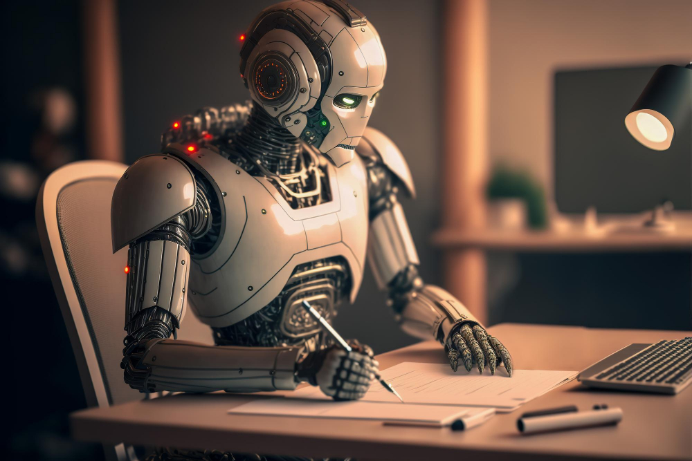

A Dança Digital: Navegando na Era Multitarefa
Postado em 18/12/2023

Na intricada tapeçaria da era digital, testemunhamos uma transformação extraordinária na forma como os seres humanos interagem com dispositivos tecnológicos. À medida que navegamos por esse novo território digital, uma habilidade emerge como protagonista: a arte de manusear diversos dispositivos simultaneamente.
Num passado recente, a interação humana com a tecnologia era uma experiência linear. Um dispositivo, uma tela, uma tarefa. Contudo, o cenário evoluiu para um palco complexo, onde múltiplos dispositivos coexistem, cada um com sua própria função e propósito.
Essa mudança traz consigo uma dança digital, uma coreografia complexa de multitarefa que desafia as fronteiras do que antes considerávamos possível. O smartphone torna-se uma extensão natural do nosso ser, enquanto o laptop abre portas para mundos de produtividade. Tablets, smartwatches e outros dispositivos incorporam-se à sinfonia digital, proporcionando uma experiência única.
Esse movimento não é apenas físico; é também uma adaptação cognitiva. Nosso cérebro, uma vez limitado a uma única linha de pensamento, ajusta-se à demanda de processar informações de maneira simultânea. Essa capacidade aprimorada de multitarefa não apenas redefine a forma como realizamos tarefas, mas também influencia a própria estrutura do pensamento humano.
No entanto, essa dança digital não é isenta de desafios. A constante alternância entre dispositivos pode criar um ambiente propício à distração, questionando a qualidade da atenção que dedicamos a cada tarefa. É uma faca de dois gumes, onde a agilidade da multitarefa pode ser nossa maior aliada ou uma distração inescapável.
Num mundo onde a mudança é constante, essa evolução na interação humana com a tecnologia marca um capítulo significativo. Estamos nos tornando maestros da dança digital, navegando entre dispositivos com uma destreza única. Esta é a história da transformação humana na era da multitarefa, onde a tecnologia não apenas molda o que fazemos, mas também redefine quem somos.
IA: Transformando Nossos Afazeres Diários
Postado em 19/12/2023
Estamos imersos em uma era extraordinária de avanços tecnológicos, onde a Revolução da Inteligência Artificial (IA) redefine a forma como conduzimos nossos afazeres diários. À medida que incorporamos sistemas inteligentes em nossa rotina, é inevitável que essas mudanças reverberem em nossa maneira de realizar tarefas.
A automação provida pela IA já está impactando profissões e setores diversos, simplificando processos e aumentando a eficiência. Contudo, enquanto celebramos as facilidades proporcionadas por assistentes virtuais e algoritmos preditivos, também enfrentamos desafios significativos.
A transformação nos afazeres diários ocorre em dois planos distintos. Por um lado, observamos a otimização operacional, onde tarefas repetitivas e demoradas são assumidas pela IA, permitindo que nos concentremos em atividades mais complexas e criativas. Por outro lado, nos deparamos com a necessidade de nos adaptarmos a um novo paradigma de trabalho, onde a colaboração entre humanos e máquinas se torna essencial.
Além da esfera profissional, a IA influencia até mesmo os aspectos mais mundanos de nossas vidas. Desde a sugestão personalizada de conteúdo até a automação residencial, percebemos que nossos afazeres diários estão intrinsecamente ligados à presença da inteligência artificial.
Essa revolução, embora promissora, exige reflexão constante sobre como equilibrar a eficiência tecnológica com a autenticidade humana. O desafio reside em integrar harmoniosamente a IA em nossas vidas, mantendo a singularidade e o propósito nos afazeres que, no fim das contas, nos definem como seres humanos.